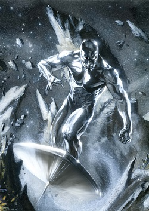

Silver Surfer
Super awesome silver alien who rides a silver surfboard, traveling from planet to planet.
Overview

The Siver Surfer is a character appearing in American comic books published by Marvel Comics. He was created by Jck Kirby and first appeared in the comic book Fantastic Four #48, published in 1966. The Silver Surfer is a hummanoid alien with metallic skin who can travel through space with the aid of his surfboard-like craft. Alias, Norrin Radd, was from the planet Zenn-La. He saved his homeworld from the planet devourer, Galactus, by serving as his herald.Imbued in return with some portion of Galactus' Power Cosmic,[4] he acquired vast power, a new body and a surfboard-like craft on which he could travel faster than light.Now known as the Silver Surfer, he roamed the cosmos searching for planets for Galactus to consume. When his travels took him to Earth, he met the Fantastic Four, who helped him rediscover his nobility of spirit. Betraying Galactus, he saved Earth but was exiled there as punishment.
wikipedia source